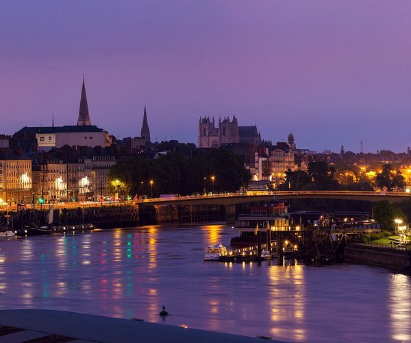
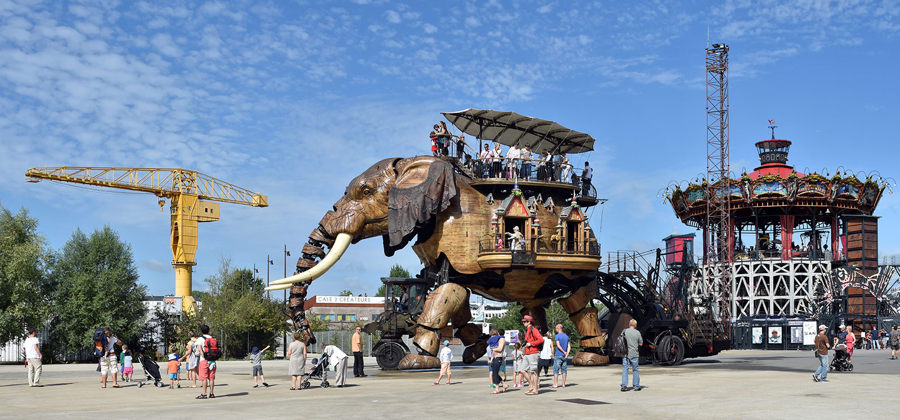
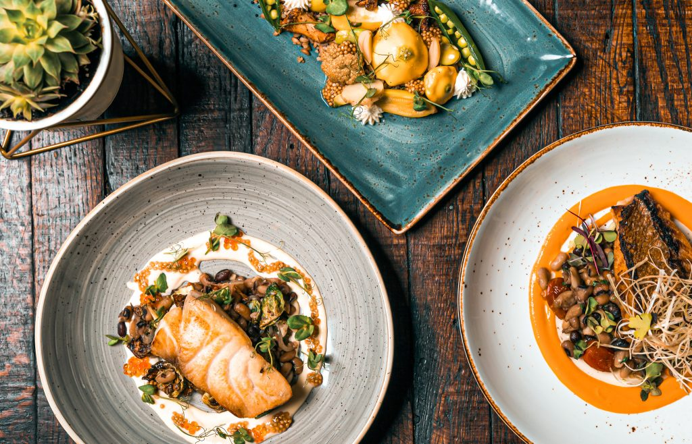
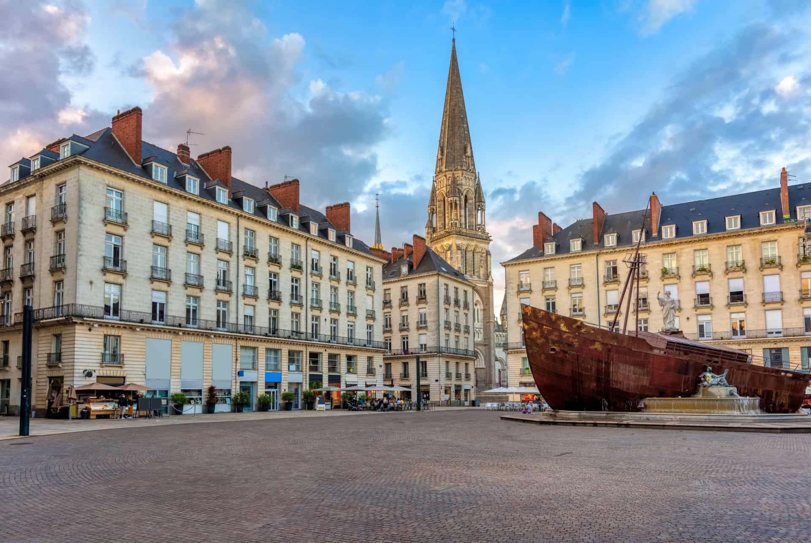
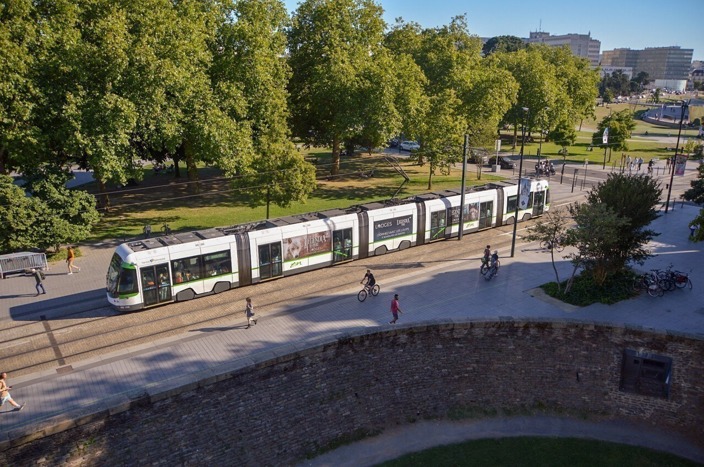

Pourquoi visiter Nantes ?
Nantes, ville d'histoire et d'innovation, offre un mélange unique de patrimoine culturel et de modernité. De la majestueuse Cathédrale Saint-Pierre-et-Saint-Paul aux Machines de l'Île, chaque coin de la ville raconte une histoire.
Culture
Nantes est riche en musées, théâtres, et événements culturels. Ne manquez pas le Château des Ducs de Bretagne et le célèbre Voyage à Nantes.
Où manger
Découvrez les spécialités locales dans les nombreux restaurants et marchés de Nantes.
Où dormir
Que vous cherchiez un hôtel de luxe ou une auberge conviviale, Nantes offre une gamme variée d'hébergements.
Comment venir
Nantes est facilement accessible en train, en avion ou en voiture. La ville dispose également d'un excellent réseau de transports en commun gratuit les weekends.